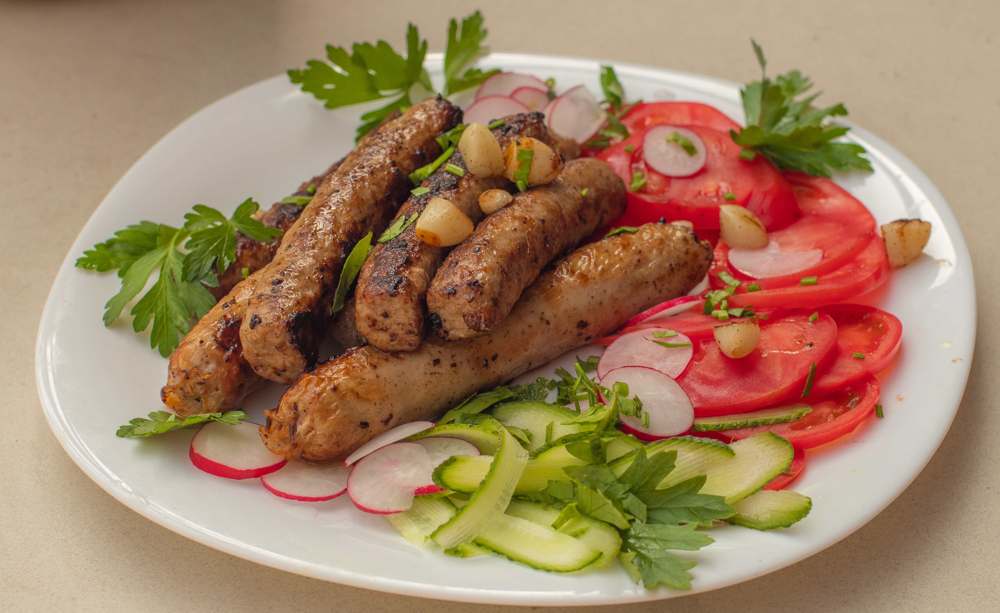

Here are some fried sausages. Hope you don't get toobusy drooling!
" "So?" "Sausage!" " That was one of the best clapbacks in primary school, back when we didn't think of the much bigger and much worse things to use in order to clap back at an opponent - we were ever so innocent, weren't we?Anyway...
Sausages began being made in Italy using ground up meat and using the small intestines as the "wrapping paper" for the meat (talk about mutura things!)
Ingredients
Oil
Some sausages
Steps
Take same oil and put into a frying pan (the deeper, the better tbh!), and wait for the oil to get hot.
Put the sausages into the oil and wait for them to turn a nice, golden brown.
Remove the sausages from the pan and put them on a plate. If you have a bit of time and don't like oily sausages, you can pat them down with some paper napkins (don't worry, the sausages will be as napkin-free as they were before you started!)